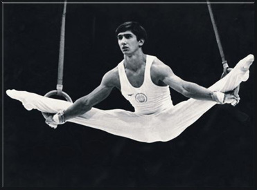

Stoyan Deltchev (BUL)
1979 European AA Champion
1980 Olympic AA Bronze Medalist

Medal Total
- Olympic Games: 1 Gold, 1
Bronze
- World Championships: 2
Bronze
- World Cup: 1 Gold, 1
Bronze
- European Championships: 3
Gold, 1 Silver, 1 Bronze
Deltchev was born on July 3,
1959 in Plovdiv. He was coached by Nikolai Nikolov (a former gymnast who competed at the 1970 world championships and the 1972 Olympics) at Trakia Plovdiv.
Married to (and now divorced from) former gymnast Krassimira Varbanova, the couple have a daughter named
Deliana, who was born in 1985. He's got his own gym, Deltchev
Gymnastics, in Reno, NV.
Competition Results
- 1975
European Championships: 22nd AA
Golden Sands International: 3rd AA, 1st PB, 2nd PH, 2nd RG
Jr. Friendship Tournament: 5th Team, 3rd HB
1976
- Balkan Championships: 1st AA
- Joachim Blume Memorial: 2nd AA
- Olympic Games: 12th Team, 64th AA (prelims)
Third Olympic Qualifying Competition: 4th Team, 32nd AA
-
- 1977
- European Championships: 5th AA, 1st HB,
5th PH, 7th PB, 8th FX
- Paris Grand Prix: 6th AA, 2nd FX, 2nd PH, 2nd VT, 2nd
PB
- Riga International: 13th AA
- World Cup: 15th AA
-
- 1978
- Army Club Championships: 1st AA, 1st FX, 1st RG, 1st VT, 1st PB, 1st HB
- Champions All: 2nd AA
Chunichi Cup: 14th AA
- FRA-USSR-BUL Tri-Meet: 3rd AA
- Golden Sands International: 1st AA
- World Championships: 12th Team, 8th AA, 3rd
PH, 3rd HB, 5th FX
-
- 1979
- Balkan Championships: 1st FX, 1st PB, 2nd RG
- BUL-HUN Dual Meet: 2nd Team, 1st AA
- European Championships: 1st AA, 1st
FX, 2nd HB, 3rd VT, 5th R, 7th PH, 7th PB
- World Cup: 3rd AA, 1st
FX, 4th PH,
8th VT, 8th HB
- World Championships: 9th Team, 4th HB, 5th
PH, 5th R, 8th AA
-
- 1980
- American Cup: 3rd AA
Golden Sands International: 1st AA, 1st FX, 1st PH, 1st RG, 1st V, 1st PB, 1st HB
Intl. Mixed Pairs: 4th Team
- Olympic Games: 5th Team, 3rd AA,
1st HB, 5th R, 5th VT, 5th PB
-
- 1981
- Balkan Championships: 1st AA, 1st FX, 1st PH, 1st
RG,
1st VT, 3rd PB
- World Championships: 10th Team, 17th AA
1983
American Cup: 20th AA (prelims)
Intl. Mixed Pairs: 6th Team
- This page was created on November 9, 1997 and was
last updated on May 16, 2026.
© Gymn Forum